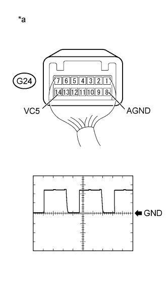

DTC B278A Short to GND in Immobiliser System Power Source Circuit |
| DTC Code | DTC Detection Condition | Trouble Area | DTC Output Confirmation Operation |
| B278A | A short to GND in the power supply of the transponder key amplifier of the engine switch (VC5 - VC5) (1 trip detection logic*). |
| With the shift lever in P, the key is held against the engine switch and an engine start operation is performed by pressing and holding the engine switch when the key battery is depleted. |
| Vehicle Condition when Malfunction Detected | Fail-safe Operation when Malfunction Detected |
| Engine cannot be started when key battery is depleted by holding key against engine switch and pressing and holding engine switch with shift lever in P | - |
| DTC Code | Data List and Active Test |
| B278A | - |
| 1.CHECK HARNESS AND CONNECTOR (CERTIFICATION ECU - ENGINE SWITCH) |
Disconnect the G26 ECU connector.
Disconnect the G24 switch connector.
Measure the resistance according to the value(s) in the table below.
| Tester Connection | Condition | Specified Condition |
| G26-28 (VC5) - G24-14 (VC5) | Always | Below 1 Ω |
| G26-36 (AGND) - G24-8 (AGND) | ||
| G26-28 (VC5) or G24-14 (VC5) - Body ground | Always | 10 kΩ or higher |
| G26-36 (AGND) or G24-8 (AGND) - Body ground |
|
| ||||
| OK | |
| 2.CHECK CERTIFICATION ECU |
|  |
Using an oscilloscope, check the waveform.
| Item | Content |
| Tester Connection | G24-14 (VC5) - G24-8 (AGND) |
| Tool Setting | 2 V/DIV., 200 ms./DIV. |
| Condition | After engine switch turned off, within 30 seconds of any door opened and closed, or brake pedal depressed |
| *a | Component with harness connected (Engine Switch) |
|
| ||||
| OK | ||
| ||